Gallery
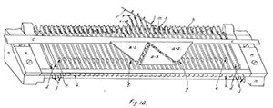
Knitting Machine Diagram
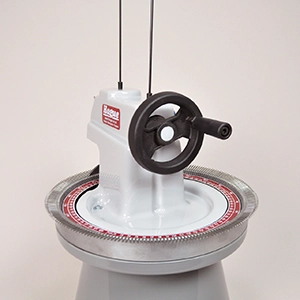
Hague D280 Circular Linker
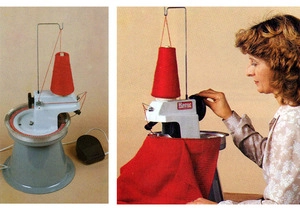
Hague D280E Circular Linker
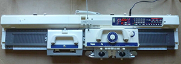
Brother KH965
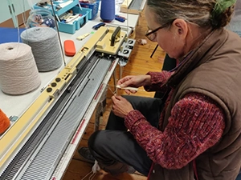
Machine In Use
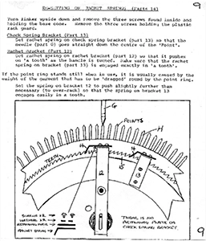
Circular Linker Diagram
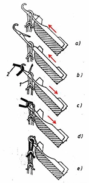
Flat Bed Hook Diagram
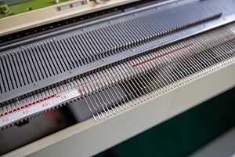
Flat Bed Hooks
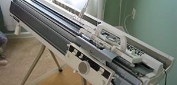
Second Needle Bed
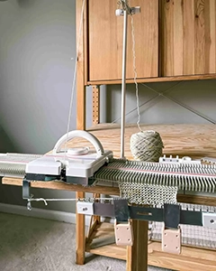
Silver Reed Knitting Machine
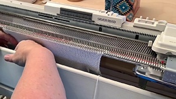
Silver Reed In Action